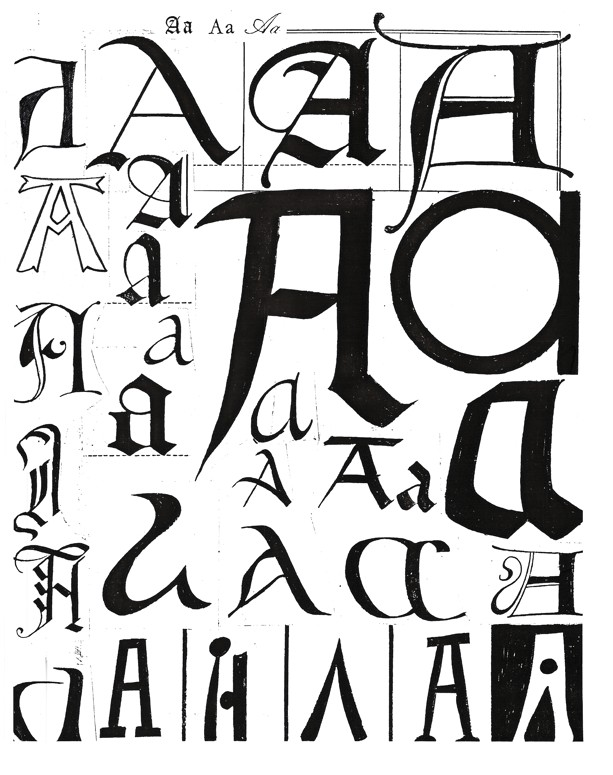

Types and Tokens
The distinction between a type and its tokens is a useful metaphysical distinction. In §1 it is explained what it is, and what it is not. Its importance and wide applicability in linguistics, philosophy, science and everyday life are briefly surveyed in §2. Whether types are universals is discussed in §3. §4 discusses some other suggestions for what types are, both generally and specifically. Is a type the sets of its tokens? What exactly is a word, a symphony, a species? §5 asks what a token is. §6 considers the relation between types and their tokens. Do the type and all its tokens share the same properties? Must all the tokens be alike in some or all respects? §7 explains some problems for the view that types exist, and some problems for the view that they don't. §8 elucidates a distinction often confused with the type-token distinction, that between a type (or token) and an occurrence of it. It also discusses some problems that occurrences might be thought to give rise to, and one way to resolve them.
- 1. The Distinction Between Types and Tokens
- 2. Importance and Applicability of the Distinction
- 3. Types and Universals
- 4. What is a Type?
- 5. The Relation between Types and their Tokens
- 6. What is a Token?
- 7. Do Types Exist?
- 8. Occurrences
- Bibliography
- Academic Tools
- Other Internet Resources
- Related Entries
1. The Distinction Between Types and Tokens
1.1 What the Distinction Is
The distinction between a type and its tokens is an ontological one between a general sort of thing and its particular concrete instances (to put it in an intuitive and preliminary way). So for example consider the number of words in the Gertrude Stein line from her poem Sacred Emily on the page in front of the reader's eyes:
Rose is a rose is a rose is a rose.
In one sense of ‘word’ we may count three different words; in another sense we may count ten different words. C. S. Peirce (1931-58, sec. 4.537) called words in the first sense “types” and words in the second sense “tokens”. Types are generally said to be abstract and unique; tokens are concrete particulars, composed of ink, pixels of light (or the suitably circumscribed lack thereof) on a computer screen, electronic strings of dots and dashes, smoke signals, hand signals, sound waves, etc. A study of the ratio of written types to spoken types found that there are twice as many word types in written Swedish as in spoken Swedish (Allwood, 1998). If a pediatrician asks how many words the toddler has uttered and is told “three hundred”, she might well enquire “word types or word tokens?” because the former answer indicates a prodigy. A headline that reads “From the Andes to Epcot, the Adventures of an 8,000 year old Bean” might elicit “Is that a bean type or a bean token?”.
1.2 What It Is Not
Although the matter is discussed more fully in §8 below, it should be mentioned here at the outset that the type-token distinction is not the same distinction as that between a type and (what logicians call) its occurrences. Unfortunately, tokens are often explained as the “occurrences” of types, but not all occurrences of types are tokens. To see why, consider this time how many words there are in the Gertrude Stein line itself, the line type, not a token copy of it. Again, the correct answer is either three or ten, but this time it cannot be ten word tokens. The line is an abstract type with no unique spatio-temporal location and therefore cannot consist of particulars, of tokens. But as there are only three word types of which it might consist, what then are we counting ten of? The most apt answer is that (following logicians' usage) it is composed of ten occurrences of word types. See §8 below, Occurrences, for more details.
2. Importance and Applicability of the Distinction
2.1 Linguistics
It is generally accepted that linguists are interested in types. Some, e.g. Lyons (1977, p. 28), claim the linguist is interested only in types. Whether this is so or not, linguists certainly appear to be heavily committed to types; they “talk as though” there are types. That is, they often quantify over types in their theories and refer to them by means of singular terms. As Quine has emphasized, a theory is committed to the existence of entities of a given sort if and only if they must be counted among the values of the variables in order for the statements in the theory to be true. Linguistics is rife with such quantifications. For example, we are told that an educated person's vocabulary is about 15,000 words, but Shakespeare's was more nearly 30,000. These are types, as are the twenty-six letters of the English alphabet, and its eighteen cardinal vowels. (Obviously the numbers would be much larger if we were counting tokens). Linguists also frequently refer to types by means of singular terms. According to the O.E.D., for example, the noun ‘color’’ is from early modern English and in addition to its pronunciation [kɒ’ lər] has two "modern current or most usual spellings" [colour, color], eighteen earlier spellings [collor, collour, coloure, colowr, colowre, colur, colure, cooler, couler, coullor, coullour, coolore, coulor, coulore, coulour, culler, cullor, cullour] and eighteen senses (vol. 2, p. 636). According to Webster's, the word ‘schedule’ has four current pronunciations: ['ske-(,)jü(ə)l], ['ske-jəl] (US), ['she-jəl] (Can) and ['she-(,)dyü(ə)l] (Brit) (p. 1044). Thus, linguistics is apparently committed to the existence of these words, which are types.
References to types is not limited to letters, vowels and words, but occur extensively in all branches of linguistics. Lexicography discusses, in terms that make it clear that it is types being referred to, nouns, verbs, words, their stems, definitions, forms, pronunciations and origins. Phonetics is committed to consonants, syllables, words and sound segments, the human vocal tract and its parts (the tongue has five). Phonology also organizes sounds but in terms of phonemes, allophones, alternations, utterances, phonological representations, underlying forms, syllables, words, stress-groups, feet and tone groups. Morphology is apparently committed to morphemes, roots, affixes, and so forth, and syntax to sentences, semantic representations, LF representations, among other things. Clearly, just as words and letters and vowels have tokens, so do all of the other items mentioned (nouns, pronunciations, syllables, tone groups and so forth). It is more controversial whether the items studied in semantics (the meanings of signs, their sense relations, etc.) also come in types and tokens, and similarly for pragmatics (including speaker meanings, sentence meanings, implicatures, presuppositions, etc.) It seems to hinge on whether a mental event (token) or part of it could be a meaning, a matter that cannot be gone into here. See Davis (2003) for a view according to which concepts and thoughts—varieties of meaning—come in types and tokens.
It is notable that when one of the above types is defined, it is defined in terms of other types. So for example, sentences might be (partly) defined in terms of words, and words in terms of phonemes.
The universal and largely unscrutinized reliance of linguistics on the type-token relationship and related distinctions like that of langue to parole, and competence to performance, is the subject of Hutton's cautionary book (1990).
2.2 Philosophy
Obviously then, types play an important role in philosophy of language, linguistics and, with its emphasis on expressions, logic. Especially noteworthy is the debate concerning the relation between the meaning of a sentence type and the speaker's meaning in using a token (a relation that figures prominently in Grice 1969). But the type-token distinction also functions significantly in other branches of philosophy as well. In philosophy of mind, it yields two versions of the identity theory of mind (each of which is criticized in Kripke 1972). The type version of the identity theory (defended by Smart (1959) and Place (1956) among others) identifies types of mental events/states/processes with types of physical events/states/processes. It says that just as lightning turned out to be electrical discharge, so pain might turn out to be c-fiber stimulation, and consciousness might turn out to be brain waves of 40 cycles per second. On this type view, thinking and feeling are certain types of neurological processes, so absent those processes, there can be no thinking. The token identity theory (defended by Kim (1966) and Davidson (1980) among others) maintains that every token mental event is some token physical event or other, but it denies that a type match-up must be expected. So for example, even if pain in humans turns out to be c-fiber stimulation, there may be other life forms that lack c-fibers but have pains too. And even if consciousness in humans turns out to be a brain waves that occur 40 times per second, perhaps androids have consciousness even if they lack such brain waves.
In aesthetics, it is generally necessary to distinguish works of art themselves (types) from their physical incarnations (tokens). (See, for example, Wollheim 1968, Wolterstorff 1980 and Davies 2001.) This is not the case with respect to oil paintings like the Mona Lisa where there is and perhaps can be only one token, but seems to be the case for many other works of art. There can be more than one token of a sculpture made from a mold, more than one elegant building made from a blueprint, more than one copy of a film, and more than one performance of a musical work. Beethoven wrote nine symphonies, but although he conducted the first performance of Symphony No. 9, he never heard the Ninth, whereas the rest of us have all heard it, that is, we have all heard tokens of it.
In ethics, actions are said to be right/wrong—but is it action types or only action tokens? There is a dispute about this. Most ethicists from Mill (1979) to Ross (1988) hold that the hallmark of ethical conduct is universalizability, so that a particular action is right/wrong only if it is right/wrong for anyone else in similar circumstances—in other words, only if it is the right/wrong type of action. If certain types of actions are right and others wrong, then there may be general indefeasible ethical principles (however complicated they may be to state, and whether they can be stated at all). But some ethicists hold that there are no general ethical principles that hold come what may—that there is always some circumstance in which such principles would prescribe the wrong outcome—and such ethicists may go on to add that only particular (token) actions are right/wrong, not types of actions. See, for example, Murdoch 1970 and Dancy 2004.
2.3 Science and Everyday Discourse
Outside of philosophy and linguistics, scientists often quantify over types in their theories and refer to them by means of singular terms. When, for example, we read that the “Spirit Bear” is a rare white bear that lives in rain forests along the British Columbia coast, we know that no particular bear is rare, but rather a type of bear. When we are told that these Kermode bears “have a mutation in the gene for the melanocortin 1 receptor” (The Washington Post 9/24/01 A16) we know that it is not a token mutation, token gene and token receptor being referred to, but a type. It is even more evident that a type is being referred to when it is claimed that “all men carry the same Y chromosome…. This one and only Y has the same sequence of DNA units in every man alive except for the occasional mutation that has cropped up every thousand years” (The New York Times, Nicholas Wade 5/27/03). Similarly, to say the ivory-billed woodpecker is not extinct is to be referring to a type, a species. (The status of species will be discussed in greater detail in §4 below.)
The preceding paragraph contains singular terms that (apparently) refer to types. An even more telling commitment to types are the frequent quantifications over them. Mayr (1970, p. 233), for example, tells us that “there are about 28,500 subspecies of birds in a total of 8,600 species, an average of 3.3 subspecies per species…79 species of swallows have an average of 2.6 subspecies, while 70 species of cuckoo shrikes average 4.6 subspecies”. Although these examples come from biology, physics (or any other science) would provide many examples too. It was claimed (in the sixties), for example, that “there are thirty particles, yet all but the electron, neutrino, photon, graviton, and proton are unstable.” Artifactual types (the Volvo 850 GLT, the Dell Latitude D610 laptop) easily lend themselves to reference also. In chess we are told that accepting the Queen's Gambit with 2…dc has been known since 1512, but Black must be careful in this opening—the pawn snatch is too risky. Type-talk is ubiquitous.
3. Types and Universals
Are types universals? They have usually been so conceived, and with good reason. But the matter is controversial. It depends in part on what a universal is. (See the entry on properties.) Universals, in contrast to particulars, have been characterized as having instances, being repeatable, being abstract, being acausal, lacking a spatio-temporal location and being predicable of things. Whether universals have all these characteristics cannot be resolved here. The point is that types seem to have some, but not all, of these characteristics. As should be clear from the preceding discussion, types have or are capable of having instances, of being exemplified; they are repeatable. To many, this is enough to count as universals. With respect to being abstract and lacking a spatio-temporal location, types are also akin to universals—that is, they are if universals are. On certain views of types and universals, types, unlike their instances, are abstract and lack a spatio-temporal location. On other views, types and universals are in their instances and hence are neither abstract nor acausal; far from lacking a spatio-temporal location, they usually have many. (For more details, see §5 below, The Relation between Types and Tokens.) So far, then, types appear to be a species of universal, and most metaphysicians would so classify them. (Although a few would not. Zemach (1992), for example, holds that there are no universals, but there are types, which are repeatable particulars—the cat may be in many different places at the same time.)
When it comes to being predicable, however, most types diverge from such classic examples of universals as the property of being white or the relation of being east of. They seem not to be predicable, or at least not as obviously so as the classic examples of universals. That is, if the hallmark of a universal is to answer to a predicate or open sentence such as being white answers to ‘is white’, then most types do not resemble universals, as they more readily answer to singular terms. This is amply illustrated by the type talk exhibited in §2 above. It is also underscored by the observation that it is more natural to say of a token of a word—‘infinity’, say—that it is a token of the word ‘infinity’ than that it is an ‘infinity’. That is to say, types seem to be objects, like numbers and sets, rather than properties or relations; it's just that they are not concrete particulars but are general objects—abstract objects, on some views. If, then, we follow Gottlob Frege (1977) in classifying all objects as being the sort of thing referred to by singular terms, and all properties as the sort of thing referred to by predicates, then types would be objects. Hence they would not fall into the same category as the classic examples of universals such as being white and being east of, and thus perhaps should not be considered universals at all. (Although perhaps all this shows is that they are not akin to properties, but are their own kind of universal.) A general exception to what has just been claimed about how we refer to types (with singular terms) might be inferred from the fact that we do more often say of an animal that it is a tiger, rather than that it is a member of the species Felis Tigris. This raises the question as to whether the species Felis Tigris is just the property of being a tiger, and if it isn't, then what the relation between these two items is.
Wollheim (1968, p. 76) insightfully puts the point that types seem to be objects as that the relationship between a type and its tokens is “more intimate” than that between (a classic example of) a property and its instances because “for much of the time we think and talk of the type as though it were itself a kind of token, though a peculiarly important or pre-eminent one”. He (1968, p. 77) mentions two other differences worth noting between types and the classic examples of universals. One is that although types and the classic examples of properties often satisfy the same predicates, there are many more predicates shared between a type and its tokens than between a classic example of a property and its instances. (Beethoven's Symphony No. 9 is in the same key, has the same number of measures, same number of notes, etc. as a great many of its tokens.) Second, he argues that predicates true of tokens in virtue of being tokens of the type are therefore true of the type (Old Glory is rectangular) but this is never the case with classic properties (being white is not white.)
These considerations may not suffice to show that types aren't universals, but they do point to a difference between types and the classic examples of properties.
4. What is a Type?
The question permits answers at varying levels of generality. At its most general, it is a request for a theory of types, the way set theory answers the question “what is a set?” A general answer would tell us what sort of thing a type—any type—is. For example, is it sui generis, or a universal, or perhaps the set of its tokens, or a function from worlds to sets, or a kind, or, as Peirce maintained, a law? These options are discussed in §4.1. At a more specific level, “what is a type?” is a request for a theory that would shed some light on the identity conditions for specific types of types, not necessarily all of them. It would yield an account of what a word (or a symphony, a species, a disease, etc.) is. This is in many ways a more difficult thing to do. To see just how difficult it is to give the identity conditions for an individual type, §4.2 considers what a word is, both because words are our paradigm of types, since the type-token distinction is generally illustrated by means of words, and because doing so will show that some of the most common assumptions made about types and their tokens are not correct. It will also illuminate some of the things we want from a theory of types.
4.1 Some General Answers
As mentioned in the previous paragraph, one way a theory of types might answer the question “what is a type?” is the way set theory answers the question “what is a set?” If types are universals, as most thinkers assume, then there are as many theories of types as there are theories of universals. Some axiomatic theories include Zalta 1983 and Jubien 1988. Since theories of universals are discussed at length in this Encyclopedia elsewhere, they will not be repeated here. (See properties.) However it might be said that types are not universals for the reasons mentioned in §3 above, where it was urged that types might be neither properties nor relations but objects, and there is an absolute difference between objects and properties. Identifying types as universals would appear to fly in the face of that consideration.
4.1.1 A Set
It might appear that types are better construed as sets (assuming sets themselves are not universals). The natural thought is that a type is the set of its tokens, which is how Quine sometimes (1987, p. 218) construes a type. After all, a species is often said to be “the class of its members”. There are two serious problems with this construal. One is that many types have no tokens and yet they are different types. For example, there are a lot of very long sentences that have no tokens. So if a type were just the set of its tokens, these distinct sentences would be wrongly classified as identical, because each would be identical to the null set. Another closely related problem also stems from the fact that sets, or classes, are defined extensionally, in terms of their members. The set of natural numbers without the number 17 is a distinct set from the set of natural numbers. One way to put this is that classes have their members essentially. Not so the species homo sapiens, the word ‘the’, nor Beethoven's Symphony No. 9. The set of specimens of homo sapiens without George W. Bush is a different set from the set of specimens of homo sapiens with him, but the species would be the same even if George W. Bush did not exist. That is, it is false that had George W. Bush never existed, the species homo sapiens would not have existed. The same species might have had different members; it does not depend for its existence on the existence of all its members as sets do.
Better, then, but still in keeping with an extensional set-theoretic approach, would be to identify a type as a function from worlds to sets of objects in that world. It is difficult to see any motivation for this move that would not also motivate identifying properties as such functions and then we are left with the question of whether types are universals, discussed in §3.
4.1.2 A Kind
The example of homo sapiens suggests that perhaps a type is a kind, where a kind is not a set (for the reasons mentioned two paragraphs above). Of course, this raises the question of what a kind is; Wolterstorff (1970) adopts the kind view of types and identifies kinds as universals. In Wolterstorff 1980, he takes being an example of as undefined and uses it to define kinds—so that, for example, a possible kind is one such that it is possible there is an example of it. Norm kinds he then defines as kinds “such that it is possible for them to have properly formed and also possible for them to have improperly formed examples” (p. 56). He identifies both species and artworks as norm-kinds. Bromberger (1992a) also views the tokens of a type as a quasi-natural kind relative to appropriate projectible (“What is its freezing point?” e.g.) and individuating questions (“Where was it on June 13th, 2005?”). However, he doesn't identify the type as the kind itself, since to do so does not do justice to the semantic facts mentioned in §2 above, that types are largely referred to by singular terms. Instead he views the type as what he calls the archetype of the kind, defined as something that models all the tokens of a kind with respect to projectible questions but not something that admits of answers to individuating questions. Thus for Bromberger the type is not the kind itself, but models all the tokens of the kind. We shall see some difficulties for this view in §5 below.
4.1.3 A Law
It wouldn't do to ignore what the coiner of the type-token distinction had to say about types. Unfortunately it cannot be adequately unpacked without an in-depth explication of Peirce's semiotics, which cannot be embarked upon here. (See the entries on Charles Sanders Peirce and Peirce's theory of signs.) Peirce said types “do not exist”, yet they are “definitely Significant Forms” that “determine things that do exist” (4.423). A type, or “legisign” as he also calls it, “has a definite identity, though usually admitting a great variety of appearances. Thus, & and and the sound are all one word” (8.334). Elsewhere he tells us that a type is “a general law that is a sign. This law is usually established by men. Every conventional sign is a legisign. It is not a single object, but a general type which…shall be significant. …[E]very Legisign requires Sinsigns” (2.246). Sinsigns are tokens. (It should be mentioned that for Peirce there is actually a trichotomy among types, tokens and tones, or qualisigns, which are “the mere quality of appearance” (8.334).) Thus types have a definite identity as signs, are general laws established by men, but they do not exist. Perhaps all Peirce meant by saying they do not exist was that they are “not individual things” (6.334), that they are, instead what he calls “generals”—not to be confused with universals. What he might have meant by a “general law” is uncertain. Stebbing (1935, p.15) suggests “a rule in accordance with which tokens … could be so used as to have meaning attached to them”. Greenlee (1973, p. 137) suggests that for Peirce a type is "a habit controlling a specific way of responding interpretatively." Perhaps, then, types are of a psychological nature. Obviously two people can have the same habit, so habits also come in types and tokens. Presumably, types are then habit types. This account may be plausible for words, but it is not plausible for sentences, because there are sentences that have no tokens because if Φ,Ψ are sentences, then so is (Φ & Ψ) and it is clear that for Peirce "every [type] requires [tokens]" (2.246). And it is much less plausible for non-linguistic types, like types of beetles, some of which have yet to be discovered.
4.2 What is a Word?
No general theory of types can tell us what we often want to know when we ask: what is a species, a symphony, a word, a poem, or a disease? Such questions are just as difficult to answer as what a type is in general. Even if types were sets, for example, set theory by itself will not answer the burning question of which set a species is. One would then have to go to biology and philosophy of biology to find out whether a species is (i) “a set of individuals closely resembling each other” as Darwin (1859, p. 52) would have it, (ii) a set of “individuals sharing the same genetic code” as Putnam (1975, p. 239) would have it, (iii) a set of “interbreeding natural populations that are reproductively isolated from other such groups”, as Mayr (1970, p. 12) would have it, or (iv) a set comprising “a lineage evolving separately from others and with its own unitary evolutionary role and tendencies”, as Simpson (1961, p. 153) would have it. Similarly, if there is a question of copyright infringement, one had best look to industry standards and aesthetics for what a film or a song is, and not set theory. In general, questions such as “what is a poem, a phoneme, a disease, a flag,….?” are to be pursued in conjunction with a specific discipline, and not within the confines of a general theory of types. It is largely up to linguistics and the philosophy of it, e.g., to determine the identity conditions for phonemes, allophones, cardinal vowels, LF representations, tone groups and all the other linguistic types mentioned in §2 above.
4.2.1 Identity Conditions for Words
It's instructive to consider what our paradigm of a type is—a word. It will reveal how complicated the identity conditions are for even one specific type, and help to dispel the idea that tokens are to types as cookies are to cookie cutters. It will also show what we desire from a theory of types, by exhibiting the facts that a theory of types has to accommodate. We illustrated the type-token distinction by appealing to words, so presumably we think we know at least roughly what a word type is. Unfortunately, everyone seems to think they know, but there is massive disagreement on the matter in philosophy. However, as urged in the preceding paragraph, it is crucial to rely on linguistics when we consider what a word is. When we do we find that there are different linguistic criteria for what a word is, and a good deal of the disagreement can be chalked up to this fact. McArthur 1992's The Oxford Companion to the English Language (pp. 1120-1) lists eight: orthographic, phonological, morphological, lexical, grammatical, onomastic, lexicographical and statistical— but adds that more can be demarcated. There are different types of types of words. However deserving of attention each of these is, it will be useful to focus on just one, and I will do so in what follows. There is an important and very common use of the word ‘word’ that lexicographers and the rest of us use frequently. It is, roughly, the sort of thing that merits a dictionary entry. (Roughly, because some entries in the dictionary, e.g.,‘il-,’ ‘-ile,’ and ‘metric system,’ are not words, and some words, e.g. many proper names, do not get a dictionary entry.) This notion was at play in our opening remarks in §2 about Shakespeare's vocabulary containing 30,000 words, and the twenty spellings and eighteen senses of the noun ‘color’/’colour’, the verb ‘color’/’colour’, and four current pronunciations of the noun ‘schedule’. These examples show (in this ordinary sense of ‘word’) that the same word can be written or spoken, can have more than one correct spelling, can have more than one correct spelling at the same time, can have more than one sense at the same time and can have more than one correct pronunciation at the same time. It also shows that different words can have the same correct spelling and pronunciation; further obvious examples would show that different words can have the same sense—e.g. English ‘red’ and French ‘rouge’. A theory of types, or of word types, that cannot accommodate this notion of a word is worthless. In what follows, I shall use ‘word’ in this sense.
4.2.2 What a Theory of Words Might Tell Us
Ideally, a theory of words and their tokens should tell us not only (i) what a word is (in the sense indicated), but (ii) how a word is to be individuated, (iii) whether there is anything all and only tokens of a particular word have in common (other than being tokens of that word); (iv) how we know about words; (v) what the relation is between words and their tokens; (vi) what makes a token a token of one word rather than another; (vii) how word tokens are to be individuated; and (viii) what makes us think a particular is a token of one word rather than another. These questions are distinct, although they are apt to run together because the answer to one may give rise to answers to others. For example, if we say in answer to (iii), that all tokens of a certain word (say, ‘cat’) have something in common besides being tokens of that word—they are all spelled ‘c’-‘a’-‘t’, for example—then we may be inclined to say to (vi) that spelling makes a word token a token of ‘cat’ rather than some other type; and to (vii) that word tokens of ‘cat’ are to be individuated on the basis of their being spelled ‘c’-‘a’-‘t’; and to (viii) that we think something is a token of ‘cat’ when we see that it is spelled ‘c’-‘a’-‘t’; and to (ii) that the word ‘cat’ itself is to be individuated by its spelling; and to (i) that a word type is a sequence of letters—e.g. the word ‘cat’ just is the sequence of letters <‘c’, ‘a’, ‘t’>; and to (iv) that we know about a particular word, about what properties it has, by perceiving its tokens: it has all the properties that every one of its tokens has (except for properties types cannot have, e.g., being concrete).
4.2.3 Orthography
The advantage of starting with (iii) is that if there is some nontrivial property that all tokens of a word (in the sense indicated) have in common, then perhaps we can use it to individuate the tokens, and also to get a handle on what the type is like and on how we know what the type is like. Unfortunately, it is not spelling, contrary to what many philosophers seem to think. Stebbing, e.g., considers the inscribed word a shape. But not even the linguist's much narrower notion of an orthographic word (‘a visual sign with a space around it’) requires a canonical spelling. We have seen that not all tokens of ‘color’ have the same spelling, even when they are spelled correctly, which they sometimes are not. Not all tokens are spelled at all—spoken tokens are not. Moreover, two words can have the same spelling, as the noun ‘color’ and verb ‘color’ prove, or to take a different example, the noun ‘down’ from German meaning “the fine soft covering of fowls” and the different noun ‘down’ from Celtic meaning "open expanse of elevated land". (They are not the same word with two senses, but different words with different etymologies.) Notice that even if, contrary to fact, all tokens of a word had the same spelling and we concluded that the word type itself just is the sequence of letter types that compose it, we would have analyzed word types in terms of letter types, but since we are wondering what types are in the first place, we would still need an account of what letters are since they are types too. Providing one is surprisingly difficult. Letters of the alphabet such as the letter ‘A’ are not just shapes, for example, contrary to what is implicit in Stebbing 1935 and more explicit in Goodman and Quine 1947, because Braille and Morse code tokens of the letter ‘A’ cannot be said to have “the same shape”, and even standard inscriptions of the letter ‘A’ do not have the same shape—in either a Euclidean or a topological sense—as these examples obtained from a few minutes in the library illustrate:

Moreover, the letter ‘A’ has a long history and many of its earlier “forms” would not be recognizable to the modern reader.
4.2.4 Phonology
If we switch instead to a phonemic analysis of words, as being more fundamental, similar problems arise. Not all tokens of a word are composed of the same phonemes, because some tokens are inscriptions. But even ignoring inscriptions, the example of the two ‘down’’s shows that neither can we identify a word with a sequence of phonemes. This particular difficulty might be avoided if we identify a word with a phonemic analysis paired with a sense. But this is too strong; we saw earlier that the noun ‘color’ has eighteen senses. Moreover, ‘schedule’ has more than one phonemic analysis. A phoneme itself is a type with tokens, and so we'd also need an account of what a phoneme is, and what its tokens have in common (if anything). Saying what a phoneme is promises to be at least as hard as saying what a letter is. Phonology, the study of phonemes, is distinct from phonetics, the scientific study of speech production. Phonetics is concerned with the physical properties of sounds produced and is not language relative. Phonemes, on the other hand, are language relative: two phonetically distinct speech tokens may be classified as tokens of the same phoneme relative to one language, or as tokens of different phonemes relative to another language. Phonemes are theoretical entities, and abstract ones at that: they are sometimes said to be sets of features. The bottom line is that the phonological word is not the lexicographical one either.
It might be thought that we started at too abstract a level—that if we think there is a hierarchy of types of words, we started "too high" on the hierarchy and we should start lower on the hierarchy. That is, that we should first gather together those tokens that are phonetically (and perhaps semantically) identical on the grounds that this is a perfectly good notion of a word. But notice: this would mean that different dialects of the same language would have far fewer "words" in common than one would have supposed, and it would misclassify many words because, for example, according to Fudge (1990, p. 39) a Cockney ‘know’ is like the Queen's ‘now’; the Queen's ‘know’ is like Scottish ‘now’; and a Yorkshire ‘know’ is like the Queen's ‘gnaw’. Worse, even within the very same idiolect it would distinguish as different "words" what one would have thought were the same word. For example, the word ‘extraordinary’ is variously pronounced with six, five, four, three or even two syllables by speakers of British English. According to Fudge (1990, p. 40) it ranges "for most British English speakers from the hyper-careful ['ekstrə'ʔɔ:dɪnərɪ] through the fairly careful [ɪk'strɔ:dnrɪ] to the very colloquial ['strɔ:nrɪ]." That is, the very same person may use any of five pronunciations for what should be considered the same word. Only an absolute diehard of this "bottom-up" approach would insist on distinguishing as different words representations for the same idiolectal word. Not only would a phonologist take this as excessively complicated, but the representation types themselves can receive realizations that are acoustically very different (for the small child and the man may speak the same idiolect). Fudge (1990, p. 31) assures us that "It is very rare for two repetitions of an utterance to be exactly identical, even when spoken by the same person." Pretty soon, each word token would have to count as tokens of different "words".
The example of ['strɔ:nrι] demonstrates that there may be no phonetic signal in a token for every phoneme that is supposed to compose the word: it is "missing" several syllables! This is also demonstrated by reflection on casual speech: [jeet?] for ‘did you eat?’. No wonder, then, that many phoneticians have given up on the attempt to reduce phonological types to acoustic/articulatory types. (See Bromberger and Halle 1986). Even the physicalist Bjorn Lindblom (1986, p. 495) concedes that "for a given language there seems to be no unique set of acoustic properties that will always be present in the production of a given unit (feature, phoneme, syllable) and that will reliably be found in all conceivable contexts."
However, the final nail in the coffin for the suggestion according to which all tokens of the same word have the "same sound" is that words can be mispronounced. As Kaplan (1990) has argued, a word can suffer extreme mispronunciation and still be (a token of) the same word. He asks us to imagine a test subject, who faithfully repeats each word she is told. After a time, we put filters on her that radically alter the results of her efforts. Nonetheless, we would say she is saying the word she hears. Kaplan concludes that differences in sound between tokens of the same word can be just about as great as we would like. Notice that in such circumstances intention—what word the test subject intended to produce—is key. This suggests that perhaps what all tokens of a word, say, ‘color’, have in common is that they were produced as the result of an intention to produce a token of the word ‘color’. Unfortunately, counterexamples are not hard to manufacture. (A clear phonemic example of ‘supercalifragilisticexpealadocious’ in English would probably not count as a token of ‘color’, for example.) Counterexamples aside, it would be putting the cart before the horse to try to explain what the word ‘color’ is by appealing to the intention to produce a token of the word ‘color’. It would be like trying to explain what a fork is by appealing to the intention to produce a fork. Intentions are important in helping to identify which type a token is a token of—question (viii)—but will not help us with what the type is—question (i)—and so I shall ignore them in what follows.
4.2.5 Conclusion
The upshot of all this is that there is no nontrivial, interesting, "natural", projectible property that all tokens of a word have in common, other than being tokens of that word (in the sense of ‘word’ indicated). Tokens are all the same word, but they are not all the same. That is, the answer to (iii) is no. What then, of the other questions, (i)-(viii)? They become more difficult to answer. Wetzel (2002) attempts to answer them. The primary conclusion of Wetzel 2002 is that words are theoretical entities, postulated by and justified by linguistic theory. Words, in the sense indicated, are individuated by a number of variables, including orthography, phonology, etymology, grammatical function and sense(s). As for their tokens, they are apt to have some but not all of the properties of the type. And, as the story from Kaplan shows, tokens may even be quite deformed. These considerations impact significantly on the relation between types and their tokens, discussed in the next section, §5.
5. The Relation between Types and their Tokens
The relation between types and their tokens is obviously dependent on what a type is. If it is a set, as Quine (1987, p. 217) maintains, the relation is class membership. If it is a kind, as Wolterstorff maintains, the relation is kind-membership. If it is a law, as Peirce maintains, it is something else again, perhaps being used in accordance with. (Although Peirce also says a token is an “instance” of a type and that the token signifies the type.) Nonetheless, it has often been taken to be the relation of instantiation, or exemplification; a token is an instance of a type; it exemplifies the type. (Not that every instance of a type is a token—e.g. capital ‘A’, small ‘A’, and all the other types of ‘A’s tokened in the display in §4.2 above may be said to be instances of the letter ‘A’.) As with other universals, there are two versions of this relation, Platonic and Aristotelian. Although the two versions of property realism are discussed at length under this encyclopedia's entry for properties, a few remarks about the type versions are in order.
According to Platonic versions of type realism, e.g., Bromberger 1989, Hale 1990, Katz 1981 and Wetzel 2002, the type is an abstract object, not located anywhere in space-time, although its tokens are. This version appears to give rise to serious epistemological problems—we don't see or hear the type, it isn't located anywhere in space-time, so how do spatiotemporal creatures such as ourselves know it exists, or what properties it has? Admittedly, we see and hear tokens, but how are they a guide to what the type is like? One answer, given for example, by Wolterstorff, for whom we saw in §4 that a type is a norm-kind, is that ordinary induction from tokens would give us knowledge of types, at least in the case of instantiated types. Bromberger (1992a, p.176) claims that linguists “often impute properties to types after observing and judging some of their tokens and seem to do this in a principled way” and calls the principle that licenses this inference the Platonic Relationship Principle. More specifically, he proposes (1992a) that the type, as the archetype of the quasi-natural kind which comprises the tokens, has just those projectible properties that all the tokens have. He has in mind properties such as the same underlying phonological structure, for words, and the same boiling point, for elements.
However, as we saw in §4, generally there are no such properties had by all and only tokens of a type, at least in the case of words—not same phonological structure, nor same sense nor same spelling. Not all tokens have any such natural projectible property (except for the property of being tokens of the same type). It should be clear from §4 that the cookie cutter model—the idea of the type as just a perceptible pattern for what all the tokens look like—does not work. Goodman (1972, pp. 437-8) follows Peirce in using the word ‘replica’ to apply to all tokens of the same type, (although Peirce seemed to think they were replicas of the type, whereas Goodman, being a nominalist, cannot think this) but not all tokens resemble each other in any ordinary sense beyond being tokens of the same type (although of course some do). Goodman himself is clear about this, for he notes there that “Similarity, ever ready to solve philosophical problems and overcome obstacles, is a pretender, an impostor, a quack…. Similarity does not pick out inscriptions that are ‘tokens of a common type’, or replicas of each other. Only our addiction to similarity deludes us into accepting similarity as the basis for grouping inscriptions into the several letters, words, and so forth.” But others, e.g. Stebbing (1935, p. 6) and Hardie (1936), claim that all spoken tokens are more or less similar to each other. Because they are not, Wetzel (2002) and (2008) proposes that since the only property all the tokens of a type generally share is being tokens of the type, one of the primary justifications for positing word types is that being a token of the word ‘color,’ say, is the glue that binds the considerable variety of space-time particulars together. The type is thus a very important theoretical object, whose function is to unify all the tokens as being “of the same type”; in accordance with the Platonic Relationship Principle, the type has properties based on the properties of some of its tokens, but in a complex way—in addition, the tokens have some of their properties in virtue of what properties the type has.
In Aristotelian versions of exemplification, such as Wollheim 1968 and Armstrong 1978, the type has no independent existence apart from its tokens. It is “in” each and every one of its tokens, and so can be seen or heard just as the tokens can be. This avoids the epistemological problem mentioned in the preceding paragraph, but makes it hard to explain how some types—such as very long sentences—can have no tokens.
As against instantiation of any sort, Stebbing (1935, p. 9) argues that a token is not an instance of a type, because “the type is a logical construction out of tokens having similarity or conventional association [as the inscribed word with the spoken]. It follows that the type is logically dependent upon the tokens, in the sense that it is logically impossible to mention the type-word without using a token, and further, the meaning of the type has to be defined by reference to the tokens.” These claims are quite controversial. For example, it is clear one can refer to a type word without using a token of it—one can say “the word a token of which is the first word on the page”.
Another alternative to exemplification is representation. According to Szabo (1999, p. 150), types are abstract particulars, as with Platonic realism, but tokens represent their types, just as “paintings, photographs, maps, numerals, hand gestures, traffic signs and horn signals” represent, or “stand for” their representata. A word token of ‘horse’ represents the word ‘horse’, which in turn represents horses. Just as a correct map of the planet can provide us with knowledge of the planet, so too a token can provide us with knowledge of properties of the type, thus addressing the epistemological problem. The representation view gives rise to a problem however, for it turns out that what we have been calling word tokens aren't words at all on this view, anymore than a map of a planet is a planet, and this runs contrary to our usual thinking.
6. What is a Token?
It might seem that tokens are less problematic than types, being spatio-temporal particulars. But certain complications should be noted. (We continue to use linguistic examples, but the remarks hold true for tokens generally).
- As Kaplan (1990, p. 97) pointed out, a token of a word could be suitably circumscribed empty space (e.g., in a piece of cardboard after letters have been cut out of it).
- It would seem that a token might also be a mental particular—because a poem might be composed prior to its being read or written down—although there is disagreement over whether such a mental particular is to count as a token.
- It will generally be the case that some tokens of the type resemble in their outward physical appearance some other tokens of the type, but as we saw in §4-5, it is generally not the case that all the tokens of the same type resemble one another in appearance. (Recall the example of the letter ‘A’ in §4.)
- Even being similar in appearance (say by sound or spelling) to a canonical exemplar token of the type is not enough to make a physical object/event a token of that type. The phonetic sequence [Ah ‘key ess ‘oon ah ‘may sah] is the same phonetic (type) spoken in Spanish or Yiddish. Yet if a Spanish speaker uses it to say a table goes here, she has not, in addition, said a cow eats without a knife in Yiddish. She has not said anything in Yiddish, however phonetically similar what she said might be to a sentence token of Yiddish. So her token is a token in Spanish, not Yiddish. Meaningful tokens are tokens in a language.
- Along the same lines, being a physical object/event that is similar in appearance (say by sound or spelling) to a canonical exemplar token of the type is not even enough to make the physical object/event meaningful, because, as Putnam (1981, pp. 1-2) among others has argued, the token must have been appropriately intentionally produced.
- If it is not already clear from the foregoing, it should be noted that a physical object that is a token of a type is not one intrinsically—merely by being a certain sequence of shaped ink marks, say. Just as being a brother is not an intrinsic property of brothers because one is a brother only relative to another person, so a token is a token only relative to a type, and to a language, perhaps to an orientation, and perhaps, as Hugly and Sayward (1981 p. 186) have argued, to a tokening system (e.g., Morse Code), which they define as “a set of instructions that tell how, for any given expression, a speaker of the language could construct a perceptible particular that tokens that expression given that the speaker had enough physical and mental resources…”.
7. Do Types Exist?
7.1 Universals
Since types are usually thought to be universals, the debate over whether they exist is as longstanding as the debate over universals, and debaters fall into the same camps. Realists say they do, as we saw in §5 which surveyed several varieties of realism. Realism's traditional opponents were nominalists and conceptualists. Nominalists, who renounce universals and abstract objects, say they don't. (See, e.g., Goodman and Quine 1947, Quine 1953, Goodman 1977 and Bromberger 1992b). Conceptualists argued that there are no general things such as the species homo sapiens; there are only general ideas—that is, ideas that apply to more than one thing. Applied to words, the thesis would be that words are not abstract objects “out there”, but objects in the mind. Their existence then, would be contingent on having been thought of. While this contingency may have a good deal of plausibility in the case of linguistic items, by itself conceptualism is just a stopgap measure on the issue of types and tokens generally. For ideas themselves are also either types or tokens (as evidenced by the fact that two people sometimes have the same idea). So either the conceptualist is proposing that types are idea types—which would be a species of realism—or she is proposing that there are no types, only mental idea particulars in particular persons, which is a version of nominalism. Conceptualism, therefore, will be ignored in what follows.
7.2 Realism
Realism is the most natural view in the debate with nominalism, because as we saw in some detail in §2 type talk is ubiquitous. That is, we talk as though there are types in philosophy, science and everyday life. To say that we talk as though there are types is not to invoke the traditional argument for universals, which is that a sunset and a rose are both red, so they have something in common; and this something can only be the property of being red; so properties exist. Quine (1953) convinced many at mid-century that this traditional argument for universals, which relies on predicates referring to something, fails. He objected that “the rose is red because the rose partakes of redness” is uninformative—we are no better off in terms of explanatory power with such extra objects as redness than we are without them; perhaps a rose's being red and a sunset's being red are just brute facts. Rather, to say we talk as though there are types is, as we saw in §2, to appeal to the fact that in our theories we frequently use singular terms for types, and we quantify over them. As we saw, Frege emphasized that singular term usage is in indicator of objecthood, and Quine stressed that we are ontologically committed to that over which we quantify. Such considerations led Quine himself (1987, p. 217) to hold that expression types such as ‘red’ exist, even while he denied that redness does. Since at least on the face of it we are committed to types in many fields of inquiry, therefore, it is incumbent upon the nominalist to “analyze them away”. (Or to maintain that all theories which appear to refer to types are false—but this is a pretty radical approach, which will be ignored below.)
7.3 Nominalism
Realism is not without its problems, as was noted in §5 above. Also favoring nominalism is Occam's principle which would have us prefer theories with fewer sorts of entities, other things being equal. The main problem for nominalists is to account for our apparent theoretical commitment to types, which, whatever types are, are not spatio-temporal particulars (according to nearly everyone). Traditional nominalists argued (as their name implies) that there are no general things, there are only general words, and such words simply apply to more than one thing. But this is not a solution to the current problem, presupposing as it does that there are word types—types are the problem. (Attempts to avoid this are given by Goodman and by Sellars; see below.) So-called class nominalists hold that a word type is just the class, or set, of its tokens. But this is unsatisfactory because, first, as we saw in §5, classes are ill-suited for the job, since classes have their membership and their cardinality necessarily, but how many tokens a type has is usually a contingent matter. (For the same reason, mereological sums of tokens are unsuited for the job of types, as they have their parts essentially.) And second, classes are abstract objects too, so it is hard to see how this is really a form of nominalism about abstract objects at all.
Initially more promising is the nominalistic claim that the surface grammar of type talk is misleading, that talk of types is just shorthand for talk of tokens and is thus harmless. To say ‘The horse is a mammal’ is just to say ‘All horses are mammals’; to say ‘The horse is a four-legged animal’ is to say, as Frege himself (1977) suggested, ‘All properly constituted horses are four-legged animals’. The idea is to “analyze away” apparent references to types by offering translations that are apparently type-free, and otherwise nominalistically acceptable. The problem is how to do this for each and every reference to or quantification over a type/types. Given the ubiquity of such references/quantifications, only the procurement of some sort of systematic procedure could assure us it can be done. However, chances of formulating a systematic procedure appear slight, in view of the following obstacles that would have to be overcome.
- If the “translation” is not to turn out to be trivially true because there are no tokens, it must be the case that all types have tokens. We saw in §5 there is reason to deny this, because it would falsify the law of syntax that says that if Φ,Ψ are sentences, then so is (Φ & Ψ), since there are only finitely many sentence tokens.
- The examples of ‘The horse is a mammal’ and ‘The horse is four-legged’ suggest that ‘The Type is P’ is to be analyzed as ‘All tokens, or all normal tokens, are P’. But this won't work. The noun ‘colour’ is spelled ‘color’ (among other ways) , but not all properly formed tokens of it are. ‘Colour’ also means of the face or skin (among other things), but not only do not all tokens of it mean of the face or skin, probably most do not, and the average one does not.
- These semantic facts show that ‘The Type is P’ cannot be analyzed as ‘Either all tokens are P, all properly formed tokens are P, most tokens are P or the average token is P’. Nor is there any point in searching for some other magic statistical formula that would express exactly how many tokens have to be P for the Type to be P. This is because some of the properties of the Type are collective properties—e.g., when it is said that “The grizzly bear, Ursus Horribilis, had at one time a U.S. range of most of the West, and numbered 10,000 is California alone, but today its range is Montana, Wyoming and Idaho and it numbers less than 1000.” Having a range of most of the West is true of no individual bear.
- It is very difficult even to find a nominalistic paraphrase for “Old Glory had twenty-eight stars in 1846 but now has fifty”, as Wetzel (2008) argues.
- So far we have only been considering analyzing away singular terms. Quantifications are indeed a nightmare. Here is Quine and Goodman's (1947 p. 180) nominalized version of “There are more cats than dogs”: “Every individual that contains a bit of each cat is bigger than some individual that contains a bit of each dog” where a bit “is an object that is just as big as the smallest animal among all cats and dogs”. Ingenious though their strategy is, it offers no help for nominalizing “Of 20,481 species examined, two-thirds were secure, seven percent were critically imperiled, and fifteen percent were vulnerable”.
7.3.1 Goodman's Nominalism
I have been writing as though it were easy to pick out and quantify over tokens of a type without referring to the type. Sometimes it is: ‘The horse…’— ‘All horses…’. But this will not generally be the case. Consider the noun ‘color’. The natural way to pick out its tokens is “all tokens of the noun ‘color’”, but obviously this will not do as a nominalistic paraphrase, for it contains a reference to a type. Goodman (1977) suggests a systematic way of paraphrasing and a general procedure for substituting nominalistic paraphrases for linguistic type-ridden sentences. In 1977 (p. 262) he claims that “any “ ‘Paris’ consists of five letters” is short for “Every ‘Paris’-inscription consists of five letter-inscriptions” ”. The idea seems to be to replace singular terms by predicates, which nominalists such as Goodman think carry no ontological commitment. So instead of “an inscription of ‘color’” write “a ‘color’-inscription.” It seems pretty clear, however, that, based on the rules of quote-names for words, this predicate still retains a singular term for a type, the word ‘color’ just as clearly as “a George W. Bush appearance” still contains a reference to Bush. That this is so is even more obvious in the case of “an ‘a cat is on the mat’-inscription”. So the question is how we might identify these tokens grammatically but without referring to the noun ‘color’ itself and still say something true and (in some appropriate sense) equivalent. Is there perhaps some other way of quantifying over tokens of a word, without referring to the word or to any other type? The fact that tokens are all “the same type” suggests they are all “the same” somehow, which begets the idea that the type must embody certain similar features that all and only its tokens have, such as spelling, or sense, or phonological structure or some combination of them. This is a beguiling idea, until one tries to find such a feature, or features, amid the large variety of its tokens—even the well-formed tokens. As we saw in §4, there is no such feature (consider again ‘color’ and ‘schedule’). They demonstrate that e.g. neither same spelling, same sense, nor same pronunciation prevail. In any event, such possible defining features involve reference to types: letter types in the spellings, phoneme types in the pronunciation. These too would have to be “analyzed away” in terms of quantifications over particulars. It might be thought that Sellars solved this problem by appealing to the notion of a linguistic role, which Loux (1998, p. 79) defines as: two word (tokens) have the same linguistic role if they “function in the same way as responses to perceptual input; they enter into the same inference patterns; and they play the same role in guiding behavior”. It is dubious whether this notion can be unpacked without referring to abstract objects (same inference patterns?), but in any event it cannot be used to pick out all tokens of a word, as we have been using the word ‘word’. The reason is that ‘red’ and ‘rouge’ are different words in our sense, but their tokens play the same linguistic role for Sellars.
But even if expressions like “a ‘color’-inscription” did not contain singular terms, Goodman's suggestion that whatever is true of the type is true of all the tokens has two fatal defects. First, it would turn truths into falsehoods. ‘Paris’ consists of five letters, as does ‘color’, but not every ‘color’-inscription consists of just five letter-inscriptions since some are spelled ‘c’-‘o’-‘l’-‘o’-‘u’-‘r’. (As for denying that these are inscriptions of the word ‘color’ see “Orthography” in §4 above.) It doesn't even work for the word ‘Paris’, as it has the forms ‘Pareiss’ and ‘Parrys’ also. Second, Goodman's technique of replacing singular terms by predicates only works if we are employing a realist semantics. That is, the key to his program is that for every word in the dictionary and every sentence in the language there corresponds a unique predicate that is true of just the tokens of that word/that sentence. (Without such predicates, true statements apparently referring to types would be short for nothing at all.) But this is only plausible on a realist semantics. If ‘predicate’ meant ‘predicate token’ there would not even be enough predicates for every word in the dictionary, much less every sentence in the language. That is, it is certainly false that for every word α in the dictionary, there is an actual predicate token of the form ‘is an α-inscription’. For more details on the problems with Goodman's strategy, see Wetzel (2000).
7.3.2 Sellars's nominalism
Sellars's suggestion is rather similar to Goodman's, and faces similar difficulties, but is sufficiently different to be worth mentioning. Loux (1998, pp. 75-83), for one, argues that Sellars (1963) achieves the best nominalist account available by overcoming critical objections to Carnap's “metalinguistic” account as follows. Carnap (1959, pp. 284-314) had suggested that all claims involving apparent reference to abstract objects, such as “Red is a color”, are systematically to be understood as metalinguistic claims about the word involved (“The word ‘red’ is a color predicate”). There are two obvious objections to Carnap's suggestion. The first is that we still have word types being referred to; the second is that translation of “Red is a color” and “The word ‘red’ is a color predicate” into French, say, will not result in sentences that are equivalent, since the latter (“Le mot ‘red’ est un prédicat de coleur”) will still refer to an English word, but the former will not. To counter the first objection, Sellars (1963, pp. 632-33) claims “the word ‘red’” is a distributive singular term, which typically consists of ‘the’ followed by a common noun that purports to name a kind—e.g., ‘the lion’ in “The lion is tawny”—and that use of it results in a generic claim that is about token lions, not the type—“All lions are tawny”—since “The K is f” is logically equivalent to “All Ks are f”. Note that this is similar to Goodman's suggestion and as such is subject to the same criticism as is Goodman's: the two sentence forms said to be logically equivalent are not. See the second bullet point three paragraphs above. Nor is there some other simple and straightforward logical equivalence that does the job; see the third and fourth bullet points above. At best this is a suggestion that some of the sentences in question—the ones that do not contain “collective” predicates like ‘extinct’—are logically equivalent to generic claims—e.g. “Lions are tawny”—which are capable of being true while admitting of exceptions. However, that there is a uniform semantics (even a very complex one) for generic claims, one moreover that “analyzes away” kind talk, is a strong empirical claim about language, one that does not receive strong support from current efforts to analyze generic claims. (See Carlson and Pelletier 1995.)
To counter the second objection (about non-equivalent translations) Sellars suggests we introduce a new sort of quotation device, dot quotation, that would permit translation of the quoted word. Then, e.g. “The word •red• is a color predicate” translates as “Le mot •rouge• est un prédicat de coleur”. The justification is that ‘red’ and ‘rouge’ are functionally equivalent—they play the same linguistic role. As mentioned above, this means that they have the same causes (of perceptual stimuli, e.g.) and effects (conduct, e.g.) and function similarly in inferential transitions. Again, whether Sellars can unpack the notion of “same linguistic role” without appealing to any universals remains an open question. Less open is the question of how successful such an approach is to dealing with talk of words, e.g., “The word ‘red’ consists of three letters”. If we apply Sellars' analysis systematically, this becomes “”The word ‘red’” consists of a three-lettered predicate” which is just false; if instead we reckon that “the word ‘red’” is already a distributive singular term and apply his analysis to it, getting “The word •red• is a three-lettered predicate”, this then translates incorrectly as “Le mot •rouge• est un prédicat trois-en lettres”. If we stick instead with regular quotation, which resists translation, then we cannot appeal to “same linguistic role” to say what class of things “the word ‘red’” distributes over. In any event, Sellars's account also faces the difficulty noted above with Goodman's account: it is only plausible on a realist semantics, because if ‘predicate’ meant ‘predicate token’ there would not even be enough predicates for every word in the dictionary, much less every sentence in the language. (For other problems with Sellars's account, see Loux 1978: 81-85.)
8. Occurrences
As mentioned in §1 above, there is a related distinction that needs to be mentioned in connection with the type-token distinction. It is that between a thing, or type of thing, and (what is best called) an occurrence of it—where an occurrence is not necessarily a token. The reason the reader was asked above to count the words in Stein's line in front of the reader's eyes, was to ensure that tokens would be counted. Tokens are concrete particulars; whether objects or events they have a unique spatio-temporal location. Had the reader been asked to count the words in Stein's line itself, the reader might still have correctly answered either ‘three’ or ‘ten’. There are exactly three word types, but although there are ten word tokens in a token copy of the line, there aren't any tokens at all in the line itself. The line itself is an abstract type, as is the poem in which it first appeared. Nor are there ten word types in the line, because as we just said it contains only the three word types, ‘a,’ ‘is’ and ‘rose,’ each of which is unique. So what are there ten of? Occurrences of words, as logicians say: three occurrences of the word (type) ‘a,’ three of ‘is’ and four of ‘rose’. Or, to put it in a more ontologically neutral fashion: the word ‘a’ occurs three times in the line, ‘is’ three times and ‘rose’ four times. Similarly, the variable ‘x’ occurs three times in the formula ‘∃x (Ax & Bx)’.
Now this may seem impossible; how can one and the same thing occur more than once without there being two tokens of it? Simons (1982) concludes that it can't. Wetzel (1993) argues that it is useful to distinguish objects from occurrences of them. For example, in the sequence of numbers <0,1,0,1> the very same number, the number one, occurs twice, yet its first occurrence is distinct from its second. The notion of an occurrence of x in y involves not only x and y, but also how x is situated in y. Even a concrete object can occur more than once in a sequence—the same person occurs twice in the sequence of New Jersey million dollar lottery winners, remarkably enough. If we think of an expression as a sequence, then the air of mystery over how the same identical thing can occur twice vanishes. Does this mean that, in addition to word types and word tokens, word occurrences must also be recognized? Not necessarily; we can unpack the notion of an occurrence using “occurs in” if we have the notion of a sequence available; see Wetzel 1993 for details.
The need to distinguish tokens of types from occurrences of types arises, not just in linguistics, but whenever types of things have other types of things occurring in them. There are 10,000 (or so) notes in Beethoven's Sonate Pathétique, but there are only 88 notes (types) the piano can produce. There are supposed to be fifty stars (types) in the current Old Glory (type), but the five-pointed star (type) is unique. And what could it mean to say that the very same atom (type), hydrogen, “occurs four times” in the methane molecule? Again, the perplexing thing is how the very same thing can “occur” more than once, without there being more than one token of it. Armstrong (1986), Lewis (1986a,b) and Forrest (1986) called such types “structural universals”, which were the subject of a debate among the three. Armstrong and Forrest defended Armstrong's (1978) view of universals against Lewis, who delineated seven different views of structural universals compatible with Armstrong's theory, and found all of them wanting. Basically, Lewis (1986a) assumed that there are two sorts of ways structural universals might be constructed of simpler universals: set-theoretically and mereologically. He argued that set-theoretical constructions resulted in ersatz universals, not universals worthy of the name, and that the various mereological constructions just resulted in a heap of simpler universals, where there could not be two of the simpler universals. Wetzel (2008) argues that there is a conception of a structural universal, the “occurrence conception”—which is an extension of the occurrence conception of expressions mentioned above—that escapes Lewis's objections.
Bibliography
- Allwood, Jens (1998), “Some Frequency based Differences between Spoken and Written Swedish,” Proceedings from the XVIth Scandinavian Conference of Linguistics, Department of Linguistics, University of Turku.
- Armstrong, David (1986), “In Defense of Structural Universals,” Australasian Journal of Philosophy, 64: 85-88.
- ––– (1978), Universals and Scientific Realism, Vol II. A Theory of Universals. Cambridge: Cambridge University Press.
- Block, Ned (ed.) (1980), Readings in Philosophy of Psychology, vol. 1. Cambridge, MA: Harvard University Press.
- Bromberger, Sylvain (1992), On What We Know We Don't Know. Chicago: University of Chicago Press.
- ––– (1992a), “Types and Tokens in Linguistics,” in Bromberger 1992, pp. 170-208.
- ––– and Halle, Morris (1992b), “The Ontology of Phonology” in Bromberger 1992, pp. 209-228.
- ––– and Halle, Morris (1986), “On the Relationship of Phonology and Phonetics,” in Perkell and Klatt 1986.
- Carlson, Gregory and Pelletier, Francis Jeffry (eds.) (1995), The Generic Book. Chicago: University of Chicago Press.
- Carnap, Rudolf (1959), The Logical Syntax of Language. Patterson, NJ: Littlefield, Adams and Co.
- Chomsky, Noam (1957), Syntactic Structures. The Hague: Mouton & Co.
- Dancy, Jonathan (2004), Ethics Without Principles. Oxford; New York: Clarendon Press.
- Davidson, Donald (1980), “Mental Events,” in Essays on Actions & Events. Oxford: Clarendon Press.
- Davies, Stephen (2001), Musical Works & Performances: a Philosophical Exploration. Oxford: Clarendon Press.
- Collinge, N. E. (ed.) (1990), An Encyclopedia of Language. London: Routledge.
- Darwin, Charles (1859), On the Origin of Species. London: John Murray.
- Davis, Wayne (2003), Meaning, Expression and Thought. Cambridge, UK: Cambridge University Press.
- Forrest P. (1986), “Neither Magic Nor Mereology: A Reply to Lewis,” Australasian Journal of Philosophy, 64: 89-91.
- Frege, Gottlob (1977), “On Concept and Object,” in Geach, P. & Black, M.(eds.) Translations from the Philosophical Writings of Gottlob Frege. Oxford: Basil Blackwell.
- Fudge, Eric (1990), “Language as Organized Sound: Phonology,” in Collinge 1990.
- Goodman Nelson (1977), Structure of Appearance, 3rd edition. Dordrecht, Holland: Reidel.
- ––– (1972a), Problems and Projects, Indianapolis: Bobbs-Merrill Co.
- ––– (1972b), “Seven Strictures on Similarity,” in Goodman 1972a.
- ––– and Quine, W.V. (1947), “Steps Toward a Constructive Nominalism,” Journal of Symbolic Logic, 12: 105-22. Reprinted in Goodman 1972a..
- Greenlee, D. (1973), Peirce's Concept of Sign. The Hague: Mouton.
- Grice, Paul (1969), “Utterer's Meaning and Intentions,” The Philosophical Review, 78: 147-177.
- Hale, Bob (1987), Abstract objects. Oxford and New York: Basil Blackwell.
- Hardie, C.D. (1936), “The Formal Mode of Speech,” Analysis, 4: 46-48.
- Hugly, Philip, and Sayward, Charles (1981), “Expressions and Tokens,” Analysis, 41: 181-87.
- Hutton, Christopher (1990), Abstraction & Instance: The Type-Token Relation in Linguistic Theory. Oxford: Pergamon Press.
- Jubien, Michael (1988), "On Properties and Property Theory" in Chierchia, Gennaro (ed.), Properties, Types and Meaning, Vol. I: Foundational Issues, Dordrecht, Holland: Kluwer-Academic-Publishers.
- Kaplan, David (1990), “Words”, Proceedings of the Aristotelian Society, (Supp. Vol.) 64: 93-120.
- Katz, Jerrold J. (1981), Languages and Other Abstract Objects. Totawa, N.J.: Rowman and Littlefield.
- Kim, Jaegwon (1966), “On the Psycho-Physical Identity Theory,” American Philosophical Quarterly, 3: 227-235.
- Kripke, Saul (1972), “Naming and Necessity,” in Davidson, D. and Harman, G. (eds.), Semantics of Natural Language. Dordrecht, Holland: D. Reidel.
- Lewis, David (1986a), “Against Structural Universals,” Australasian Journal of Philosophy, 64: 25-46.
- ––– (1986b), “Comment on Armstrong and Forrest,” Australasian Journal of Philosophy, 64: 92-93.
- Lindblom, Bjorn (1986), “On the Origin and Purpose of Discreteness and Invariance in Sound Patterns,” in Perkell and Klatt 1986.
- Loux, Michael (1998), Metaphysics: A Contemporary Introduction, 2nd edition. London: Routledge.
- ––– (1978), Substance and Attribute. Dordrecht, Holland: D. Reidel Publishing Co.
- Lyons, John (1977), Semantics, Vol. 1. Cambridge: Cambridge University Press.
- Mayr, Ernst (1970), Populations, Species, and Evolution. Cambridge, MA: Belknap Press of Harvard University Press.
- McArthur, Tom (1992), The Oxford Companion to the English Language. Oxford: Oxford University Press.
- Mill, John Stuart (1979), Utilitarianism, edited by George Sher. Indianapolis: Hackett Pub. Co.
- Murdoch, Iris (1970), The Sovereignty of Good. New York: Schocken Books.
- Peirce, Charles S. (1931-58), Collected Papers of Charles Sanders Peirce, Hartshorne and Weiss (eds.), Cambridge, MA: Harvard University Press.
- Perkell, Joseph S. and Klatt, Dennis H., eds. (1986), Invariance and Variability in Speech Processes, Hillsdale, NJ: Lawrence Erlbaum Associates.
- Place, U.T. (1956), “Is Consciousness a Brain Process?” British Journal of Psychology, 47: 44-50.
- Putnam, Hilary (1981), Reason, Truth and History. Cambridge: Cambridge University Press.
- ––– (1975), “The Meaning of Meaning,” Mind, Language and Reality. Cambridge: Cambridge University Press.
- Quine, Willard.Van (1987), Quiddities: An Intermittently Philosophical Dictionary. Cambridge, MA: Harvard University Press, pp.216-219.
- ––– (1953), “On What There Is,” From A Logical Point of View. Cambridge, MA: Harvard Univerity Press.
- Ross, W.D. (1988), The Right and the Good. Indianapolis: Hackett Pub. Co.
- Sellars, Wilfrid (1963), “Abstract Entities,” Review of Metaphysics, 16: 627-671.
- Simons, Peter (1982), “Token Resistance,” Analysis, 42/4: 195-203.
- Simpson, G.G. (1961), Principles of Animal Taxonomy (New York: Columbia University Press).
- Smart, J.J.C. (1959), “Sensations and Brain Processes,” Philosophical Review, 68: 141-56.
- Stebbing, Susan (1935), “Sounds, Shapes and Words,” Proceedings of the Aristotelian Society, (Supp. Vol.) 14: 1-21.
- Szabó, Zoltán (1999), “Expressions and Their Representations,” The Philosophical Quarterly, 49: 145-163.
- Wetzel, Linda (1993), “What Are Occurrences of Expressions?” Journal of Philosophical Logic, 22: 215-220.
- ––– (2000), “The Trouble With Nominalism,”Philosophical Studies, 98: 361-370.
- ––– (2002), “On Types and Words,” Journal of Philosophical Research, 27: 237-263.
- ––– (2008), Types and Tokens: An Essay on Universals. Cambridge, MA: MIT Press.
- Wollheim, Richard (1968), Art and Its Objects. New York: Harper and Row.
- Wolterstorff, Nicholas (1980), Works and Worlds of Art. Oxford: Clarendon Press.
- ––– (1975), “Toward An Ontology of Art Works,” Noûs, 9: 115-142.
- ––– (1970), On Universals: An Essay in Ontology. Chicago: University of Chicago Press.
- Yablo, Stephen (2002) “Abstract Objects: A Case Study,” Nous, 36 (Supp. Vol. 1): 220-240.
- Zalta, Edward (1983), Abstract Objects: An Introduction to Axiomatic Metaphysics. Dordrecht: D. Reidel.
- Zemach, Eddy (1992), Types: Essays in Metaphysics. Leiden, the Netherlands: E.J. Brill.
Academic Tools
How to cite this entry. Preview the PDF version of this entry at the Friends of the SEP Society. Look up topics and thinkers related to this entry at the Internet Philosophy Ontology Project (InPhO). Enhanced bibliography for this entry at PhilPapers, with links to its database.


Other Internet Resources
[Please contact the author with suggestions.]